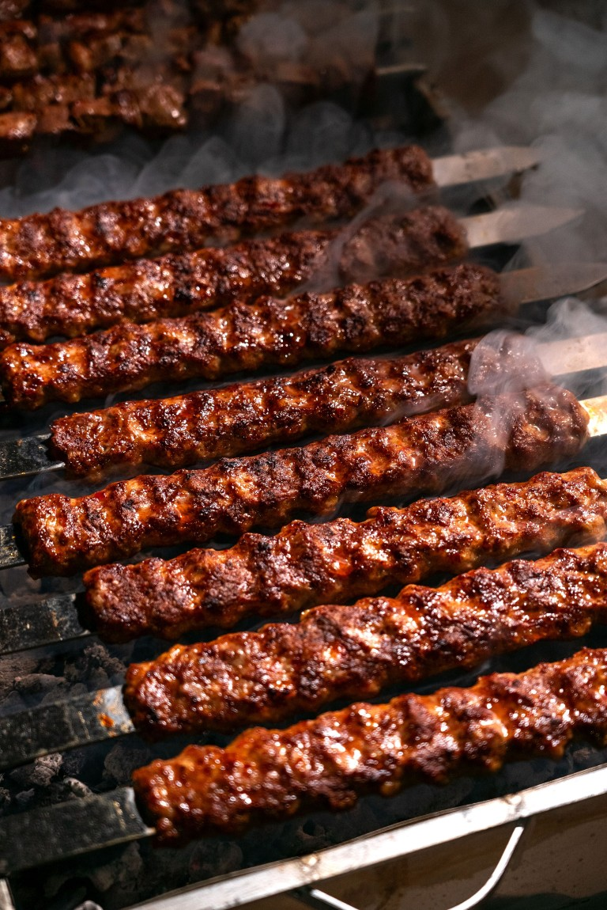
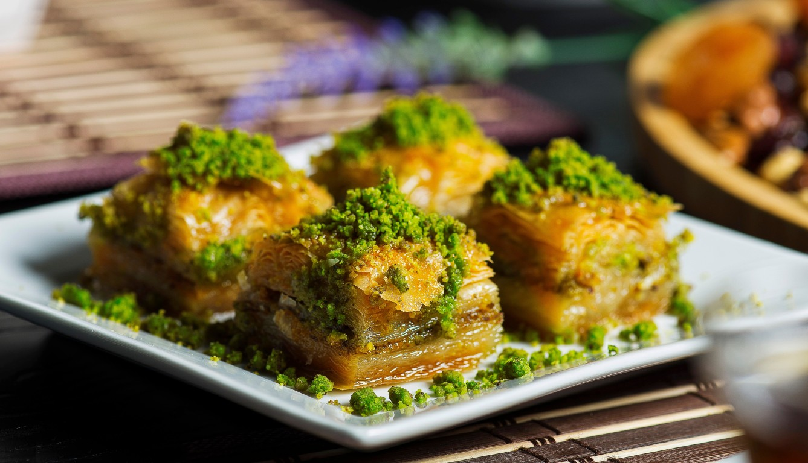
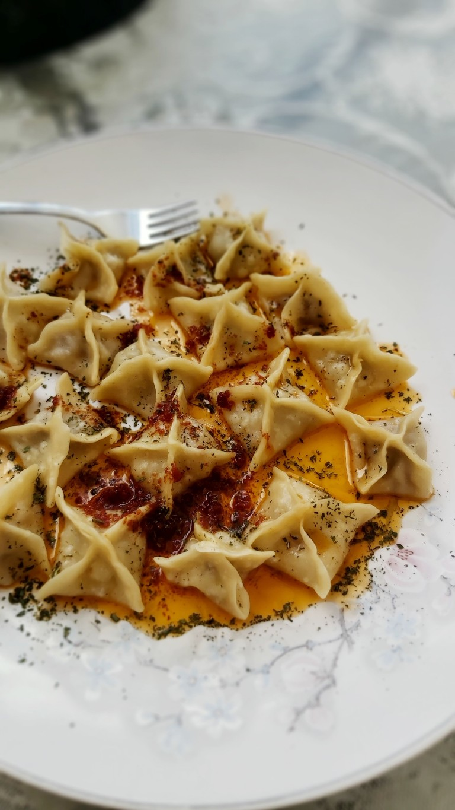

Jagnječji kebap

Sočni jagnječji kebap z zelenjavo
Čas priprave : 45 Minut | 4 Porcije
Sestavine
- 600 g mlete jagnjetine
- 1 čebula
- 2 stroka česna
- 1 žlička mlete paprike
- 1 žlička kumine
- 1 žlička soli
- ½ žličke črnega popra
- 2 žlici olivnega olja
- 4 lepinje
- 200 g sveže zelenjave
Postopek
- Čebulo in česen drobno sesekljaj.
- skledi zmešaj jagnjetino, čebulo, česen, papriko, kumino, sol in poper.
- Zmes dobro pregneti in jo za 20 minut postavi v hladilnik.
- Oblikuj podolgovate kebabe oziroma jih natakni na lesena ali kovinska nabodala.
- Kebabe premaži z olivnim oljem.
- Peci jih na žaru ali v ponvi približno 10–12 minut in jih med pečenjem obračaj.
- Postrezi jih v lepinji s svežo zelenjavo in omako.
Baklava

Hrustljava baklava s pistacijami
Čas priprave: 60 minut | 8 porcij
Sestavine
- 250 g listnatega testa
- 200 g pistacij
- 150 g masla
- 200 g sladkorja
- 150 ml vode
- 2 žlici limoninega soka
- 1 žlica medu
Postopek
- Pistacije drobno nasekljaj.
- Pekač premaži z maslom in vanj položi plast testa.
- Testo premaži z maslom in dodaj plast pistacij. Postopek ponavljaj, dokler ne porabiš sestavin.
- Baklavo nareži na trikotnike ali kvadrate.
- Peci jo približno 35–40 minut pri 180 °C, dokler ne postane zlato-rjava.
- Medtem zavri vodo, sladkor, limonin sok in med. Kuhaj približno 5 minut.
- Vroč sirup prelij čez pečeno baklavo in jo pred serviranjem ohladi.
Mantı – turški cmoki

Domači turški cmoki z jogurtom in česnom
Čas priprave: 90 minut | 4 porcije
Sestavine
- 300 g moke
- 1 jajce
- 100 ml vode
- ½ žličke soli
- 250 g mletega mesa
- 1 manjša čebula
- ½ žličke črnega popra
- ½ žličke soli
- 250 g grškega jogurta
- 2 stroka česna
- 50 g masla
- 1 žlička sladke paprike
- 1 žlica olivnega olja
Postopek
- Iz moke, jajca, vode in soli zamesi gladko testo.
- Testo pokrij in ga pusti počivati približno 30 minut.
- Za nadev zmešaj mleto meso, drobno sesekljano čebulo, sol in poper.
- Testo tanko razvaljaj in ga nareži na majhne kvadratke.
- Na sredino vsakega kvadratka dodaj malo mesnega nadeva in robove dobro stisni.
- Cmoke kuhaj v osoljeni vreli vodi približno 8–10 minut.
- Jogurt zmešaj z zdrobljenim česnom.
- Na ponvi stopi maslo, dodaj papriko in olivno olje ter na kratko prepraži.
- Kuhane cmoke postrezi z jogurtovo omako in jih prelij s paprikovim maslom.